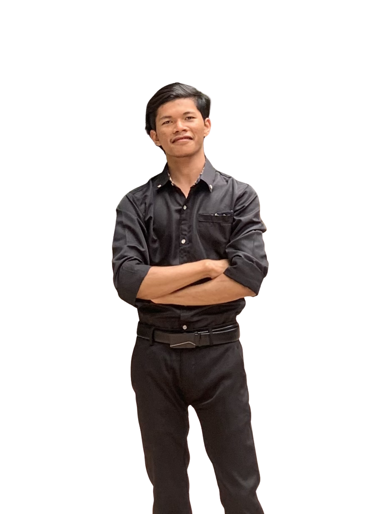
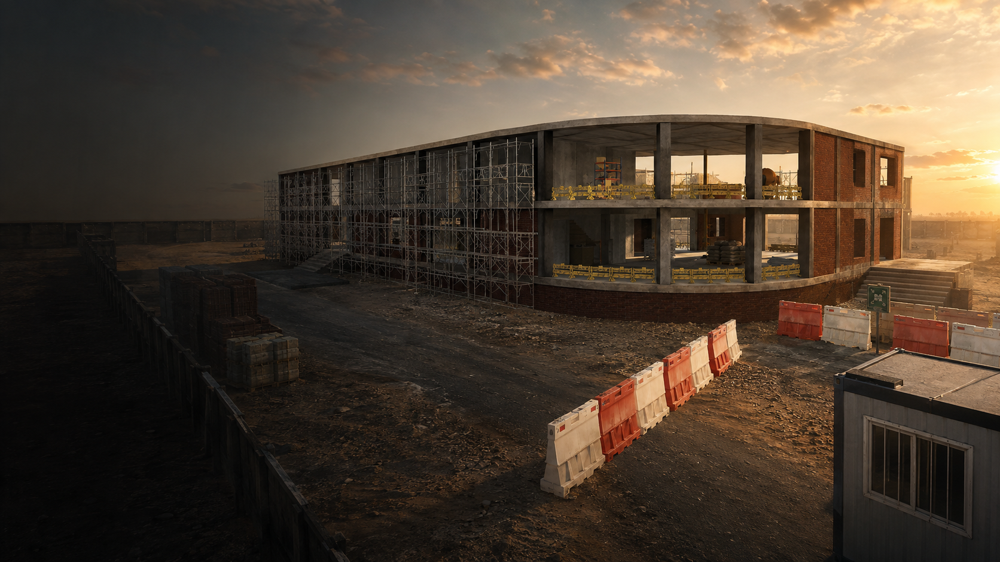
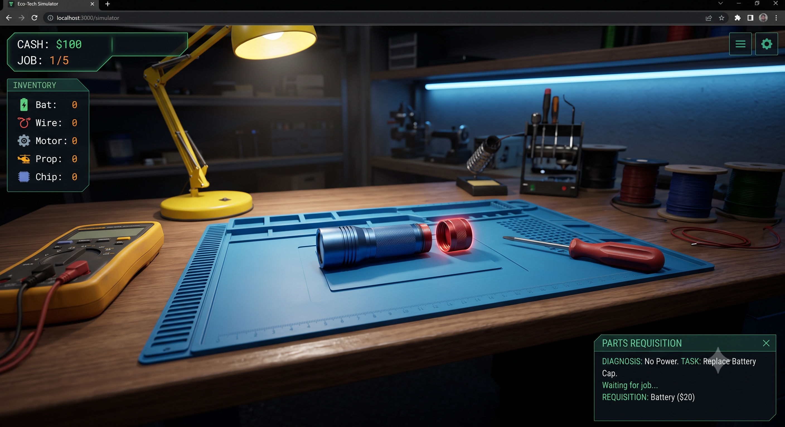
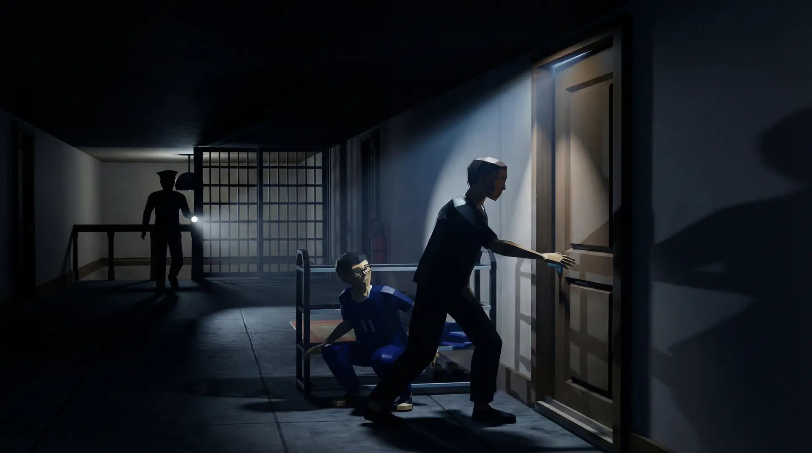
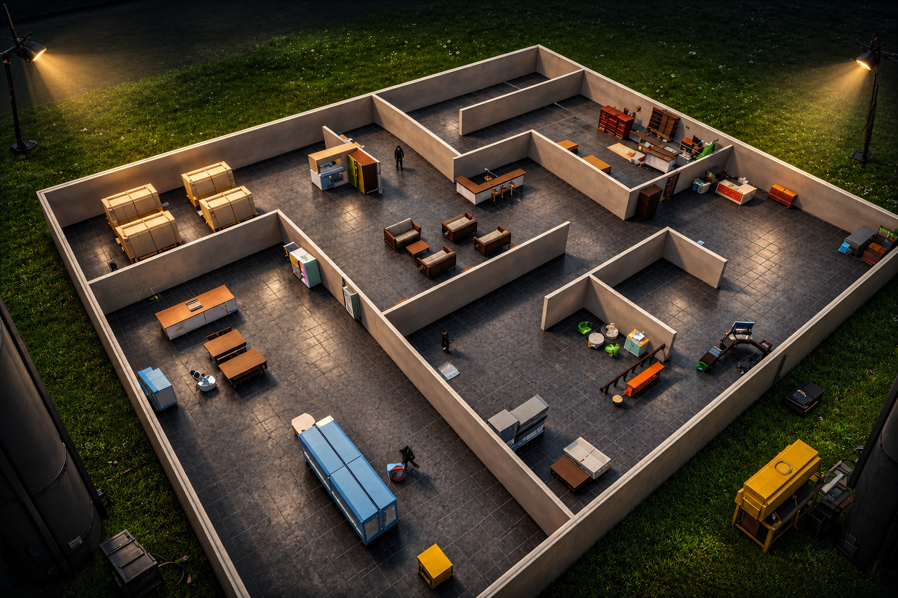
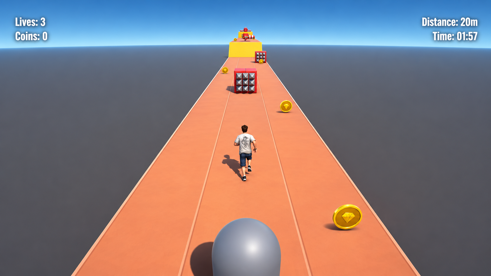
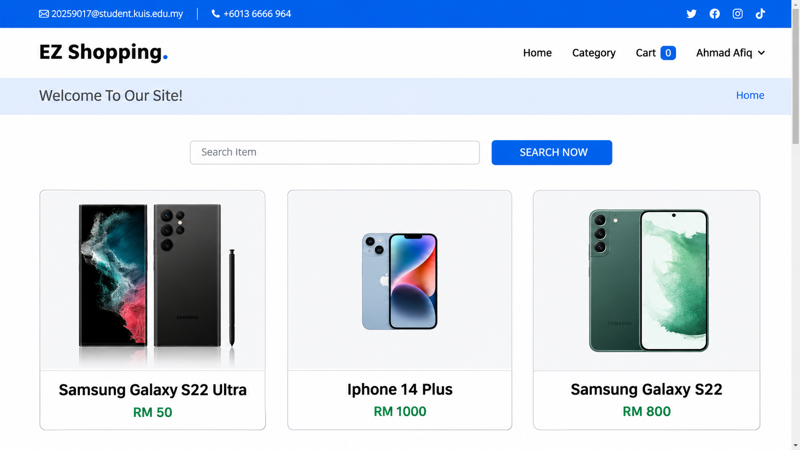
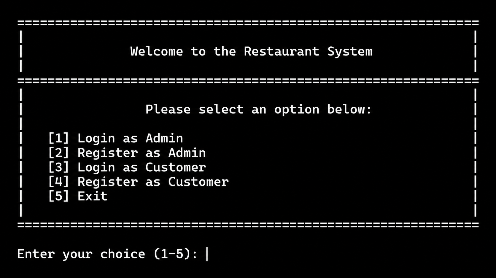

Current
Final Year Project — Solo Developer
Designing the gameplay loop, risk system, hazard decisions, worker inspection, interface, testing, and final polish in Unity 6.
Malaysian Game Technology Student
Game Technology Developer
Unity gameplay systems, interactive training simulations, software quality, and digital experiences.
Game developer specialized in interactive systems
I build gameplay systems, training simulations, software, and digital experiences. My work connects Unity development, interaction design, software quality, and clear visual communication.
I'm completing a Bachelor of Information Technology (Game Technology) at UTeM and I'm available for industrial training from 28 September 2026 to 12 March 2027.
Contact me ✉
Experience & direction
From software testing and content creation to building interactive worlds in Unity.
Designing the gameplay loop, risk system, hazard decisions, worker inspection, interface, testing, and final polish in Unity 6.
Seeking a six-month placement in game development, interactive technology, software engineering, QA, or digital design.
View resumeTested program flows, logged defects, prepared test scripts, documented results, and participated in SIT meetings.
Grew an audience organically through strong hooks, audio timing, visual pacing, consistency, and audience awareness.
Selected work
Games, training simulations, software systems, and motion work—built through hands-on development and iteration.

01
02
03
04
05
06
07 08
08 09
09Current focus · Final Year Project
A first-person learning experience where players inspect workers, identify hazards, make PPE decisions, and manage a dynamic risk meter. I own the full design and development workflow.
Connected disciplines
Tools & capabilities
A multidisciplinary toolkit for taking interactive ideas from concept to a tested, communicative experience.
Academic background
Universiti Teknikal Malaysia Melaka
Universiti Islam Selangor / KUIS
SMA Kampung Laut
SMU · 9 Mumtaz · 1 Jayyid JiddanSMK Tengku Intan Zaharah
SPM · 3A · 3B · 1C · 2D · 2EMalay · English · Arabic
Native · Working · FoundationalAvailable for internship · Sep 2026
I'm looking for a six-month industrial training placement where I can contribute to game development, interactive technology, software engineering, QA, or digital design.